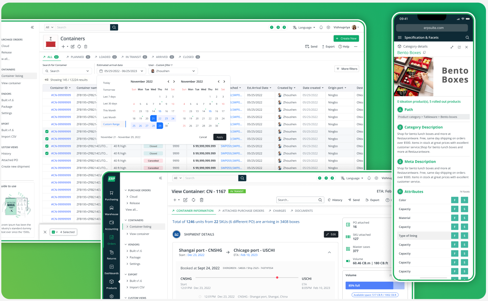
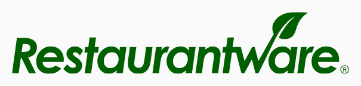

From a fragile MVP built for 150 products to a scalable platform supporting 15,000+ — through object-oriented components, bulk-first workflows and a system of reusable primitives.

The challenge

Restaurantware has been redefining foodservice essentials since 2010 — eco-friendly and specialty tableware, disposables and equipment for chefs, restaurateurs and foodservice businesses across the US. Their catalog has grown to more than 17,000 products, with 250+ new products launching every quarter. That scale and pace of growth is exactly what pushed their original systems past what they could support.
ERP 2.0 was originally built as an MVP using an Adobe website builder with heavy customisation. As the business scaled past 7,000 products, the system became slow, fragile, and operationally expensive.
The software frequently broke, UX was inconsistent, and every change required significant admin effort. With no designers involved from the start, the system could no longer support business growth. The challenge was to reimagine the ERP from scratch — not as a patch, but as a scalable product platform.
Rewriting. Refactoring. Redesigning.
ERP 2.0 → ERP Suite 3.0.
ERP Suite 3.0 is a custom cloud ERP used as the single source of truth across these areas — powering the entire backend of Restaurantware's US e-commerce operations.
My role
Discovery
The real bottleneck wasn't feature complexity. It was repetitive admin effort caused by poor system primitives — admins were forced to repeat the same actions hundreds of times across product variants.
Design strategy
Explore further
Each area below gets its own case study — full flows, iterations and every screen involved.
The complete lifecycle, key flows and iterations behind Returns Management.
View case study →Quick Edit, column components, grid patterns and the design system behind them.
View case study →Dashboards, scheduled jobs, the home page and other core ERP experiences.
View case study →Impact
Constraints & reflection
The business kept operating on ERP 2.0 throughout, so the rebuild had to happen incrementally — requiring careful prioritisation and backwards compatibility during rollout.
Thinking in systems, not screens, is what let this scale from 150 products to 15,000+ — and delivered outsized operational impact early in my career.